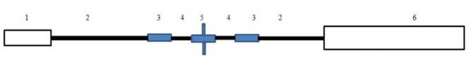
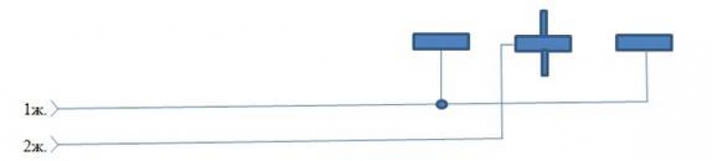
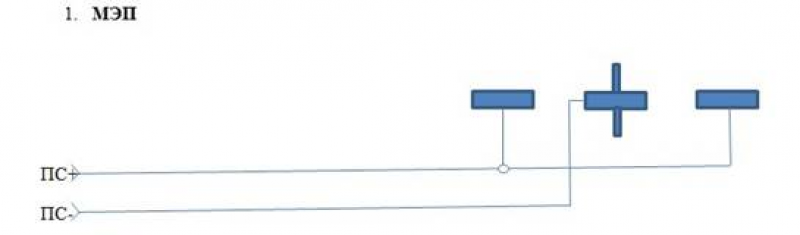
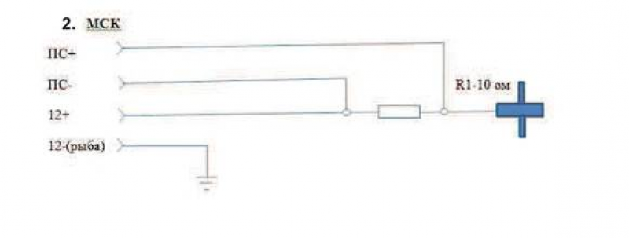

Техническое описание
1.2 Основные технические данные
1.2.1 Зонд каротажный «ЗК-01МСК» (в дальнейщем зонд) обеспечивает проведение методов скважинной электроразведки при поисках, оценке и разведке рудных месторождений.
1.2.2 Устройство зонда приведено на рис 1
Рис.1

На рис.1 цифрами обозначены следующие детали:
1 - Полумуфта каротажная ПМ-36
2 - Кабель кевраловый трехжильный
3 – Электроды
4 - Изолированные промежутки (длина 30 мм).
5 – Электрод центральный с токосъемниками (щетка)
6 – Утяжелитель
1.2.3 Схема соединений зонда приведена на рис.2
Рис.2
М N М

1.2.4 На основе Зонда «ЗК-01МСК» могут быть реализованны следуюшие методы электроразведки.
1.2.4.1 Метод электродных потенциалов (МЭП ) Регистрируется разность потенциалов между электродами М и N (выполнены из цинка), перемещаемым по скважине; электрод М касается стенки скважины, электрод N расположен по центру её.
При соприкасании электрода М с рудным телом, обладающим электронной проводимостью, разность потенциалов резко увеличивается, так как электрод М воспринимает электродный потенциал этого тела, значительно отличающийся то потенциала электрода.
Этот метод ставиться для выделение рудных тел, обладающих электронной проводимость.
Схема регистрации метода МЭП приведена на рис.3
Рис.3
М N М

1.2.4.2 Метод скользящих контактов (МСК) - это один из методов электрического каротажа измеряет сопротивление тока между электродами А (щётка) и Б(электрод заземление), используется для обнаружение сульфидных зон (повышение значение), зоны кварцевания отмечаются (минимальными значениями тока) и т.д.
Схема регистрации метода МСК приведена на рис.4
Рис.4

1.2.5 Технические характеристики
1.2.5.1 Пределы регистрации, погрешность и быстродействие определяются характеристиками наземного регистратора.
1.2.5.2 Условия работы зонда:
- максимальная температура окружающей среды - 80 °С.
- наибольшее гидростатическое давление - 20 МПа.
1.2.5.3 Габаритные размеры прибора, мм:
|
- диаметр максимальный по токосъемникам |
- 100; -150 |
|
- длина без транспортной заглушки |
- 3518 |
|
- длина с транспортной заглушкой |
- 3540 |
1.2.5.4 Точка записи зонда «ЗК-01МСК», мм - 1600
Точка записи замеряется от нижней кромки кабельной головки, накрученной на присоединительный наконечник зонда до центрального электрода с токосъемниками.
1.2.5.5 Масса зонда, кг, не более - 10.
1.2.5.6 Тип наконечника кабельного зонда соответствует НКБЦ3-36-II, ГОСТ 14213-89. 1.2.5.7 1.2.5.7 Зонд «ЗК-01МСК» рассчитан на эксплуатацию в условиях, соответствующих:
- по механическим воздействиям - группе МС2-3 по ГОСТ Р-59554-2021,
- по климатическим параметрам - группе КС4-2 по ГОСТ Р-59554-2021.
1.2.5.8 Срок службы 5 лет.